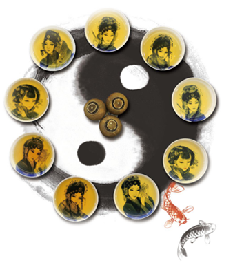

登录

- 关于
- 宁红柑红茶是基于资产链（ACChain）将实物资产数字化，在区块链底层技术基础上结合数字加密生成的数字资产代币。

陈皮与红茶，一个是大家闺秀，一个乃名门望族。宁红柑红茶采用天然的广东新会核心产地具有国家地理标志保护产品的新会柑和江西修水宁红茶具有中国农产品地理标志的红茶原料，经特殊秘制工艺加工而成，是新会柑与宁红茶制成的国内首创自行研制开发的传承中华老字号的产品。柑皮与红茶相互吸收彼此精华，口感醇和甘甜，汤色金黄透亮，越陈越香，风味独特、口感一绝。陈皮与红茶的相遇，是效法自然之道，两者浑然天成。

宁红柑红茶代币发行商
- 江西省宁红集团有限公司
- 江西省宁红集团有限公司宁红集团是中华老字号及农业产业化国家重点龙头企业，其前身修水茶厂始建于1949年，经过几十年的发展，成为了一家集产、供、销、研为一体的综合性集团公司。宁红茶文化产业园作为重组后的宁红集团总部，占地160亩。园区内有建筑面积一万平方米的生产车间，拥有宁红红茶、名优绿茶、宁红保健茶，以及各大茶类多条产品生产线，为宁红品牌推广和价值的提升奠定扎实的基础和强有力的保障。宁红集团具有很强的技术研发和产品质量控制能力，实现了从育种、茶园到茶杯全过程质量控制，先后通过了QS企业食品生产许可、ISO22000认证。
宁红柑红茶代币发行原理及退出机制
- 1.发行总价值：
- 此次公示已完成鉴定评估、托管等一系列手续的宁红柑红茶资产总价值为10085950元人民币。
- 2.退出机制：
- 1）. 宁红柑红茶代币持有者，可根据需求支付对应价格的宁红柑红茶代币行权。
- 2）. 宁红柑红茶代币可置换中国区数字本币NPC，实现以NPC为媒介的更多资产互换流通需求。